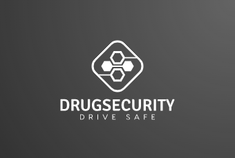
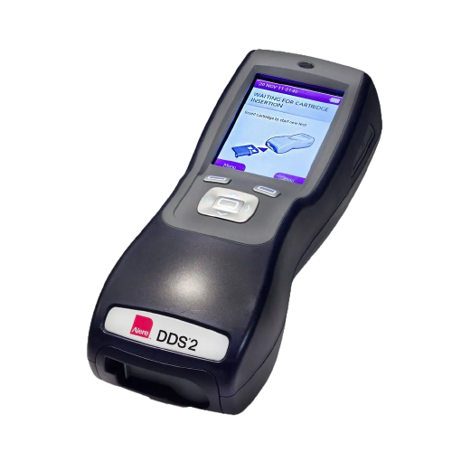

Obbiettivo
Salute e Benessere
Target:
3.6 Entro il 2020, dimezzare il numero globale di morti e feriti a seguito di incidenti stradali
L'idea
DrugSecurity verrà implementato nelle automobili e verificherà se il conducente
è in stato di ebrezza o ha assunto droghe.
Per evitare perdite di tempo non necessarie la verifica si suddivide in tre fasi:
da quella più generale a quella più specifica.
Se un controllo riconosce dei valori che possono essere conseguenza di assunzione di droghe DrugSecurity obbligherà l'utente a passare
alla fase successiva, al contrario renderà possibile avviare la macchina se i dati ottenuti sono nella norma.
Prima fase
Il primo test viene eseguito in automatico appena il guidatore si siede.
Un numero elevato di micro-telecamere situate davanti al posto del guidatore
controllerà rapidamente la grandezza delle pupille
della persona alla guida e la variazione di esse a diversi stimoli luminosi.
Un programma sarà in grado di rilevare anomalie nei dati raccolti,
si distengueranno casi di miosi o midriasi eccessive.
Se il sistema lo ritiene necessario si passerà alla seconda fase di controllo.
Seconda fase
La seconda fase prevede un controllo per quanto riguarda la frequenza cardiaca in quanto la maggior parte della droghe ne alterano i valori.
Il freno a mano sarà dotato di sensori in grado di misurare il battito cardiaco,
basterà appoggiare il palmo della mano per eseguire la misurazione. Se verranno rilevati dei valori fuori dalla norma, il conducente
sarà costretto a completare la terza e ultima fase.
Terza fase
La terza fase prevede l'uso dell'Alere DDS 2 Test: un test che tramite la saliva rileva la presenza di sostanze stupefacenti
assunte nell'arco di 4-5 ore.
Si può svolgere in meno di un minuto e la risposta è immediata ed è in grado di riconoscere livelli eccessivi di droghe nella saliva.
E' monouso ma utilizza delle ricarica che possono essere facilmenete reperibili anche in grandi quantità e possono essere tenuta in un apposito
contenitore vicino al posto del guidatore
Se quest'ultima verifica risulterà negativa, il conducente potrà
avviare normalmente l'auto, altrimenti DrugSecurity non permetterà l'avvio.

Conclusioni
Propongo questa soluzione sapendo bene che non eliminerebbe le morti per incidenti stradali causati dall'assuzione di droghe, ma credo
che ne ridurebbe di gran lunga il numero.
Sarebbe di grande aiuto e sicuramente ridurrebbe il lavoro delle forze dell'ordine che sarebbero chiamati a dover fare meno controlli,
visto che avvengono già in automatico nelle vetture.
Tutorial Alere DDS 2 Test
- Micro-telecamere
- Programma che riconosce la grandezza delle pupille
- Sensori per il battito cardiaco
- Alere DDS 2 Test
- Piano di progetto (1 mese)
- Studio dei componenti (2/3 mesi)
- Sviluppo generale (6 mesi)
- Implementazione nelle automobili (2/3 anni)